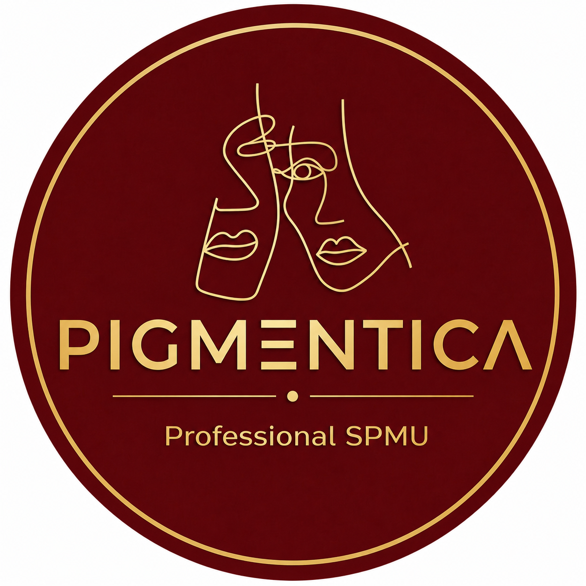
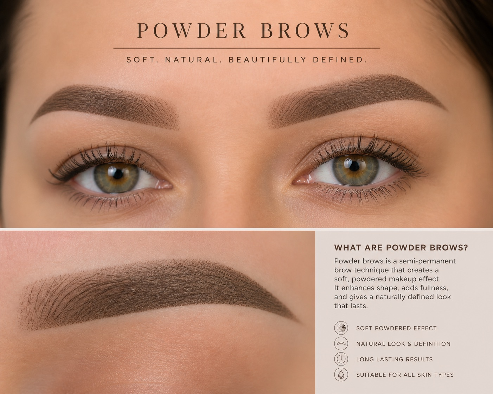
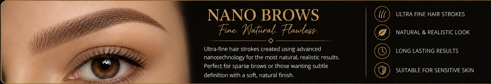
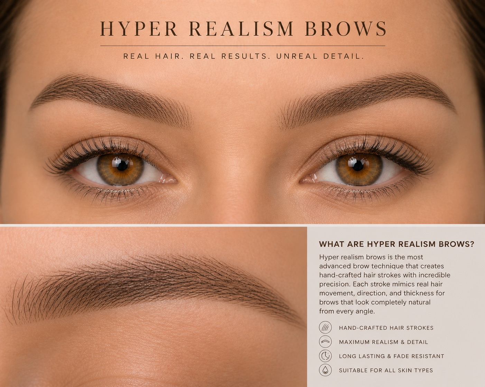
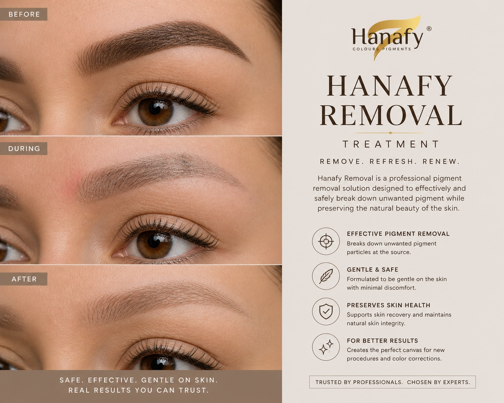

A soft, shaded brow effect that mimics the look of makeup. Perfect for a polished, defined finish while still maintaining a natural appearance.

Ultra-fine hair strokes created using advanced machine techniques for a realistic, natural look. Ideal for sparse brows and precision detailing.

The most advanced brow technique, combining multiple stroke patterns to replicate real hair growth. Designed for the most natural finish possible.

A safe and effective removal method for unwanted or faded pigment, allowing correction or preparation for new treatments.